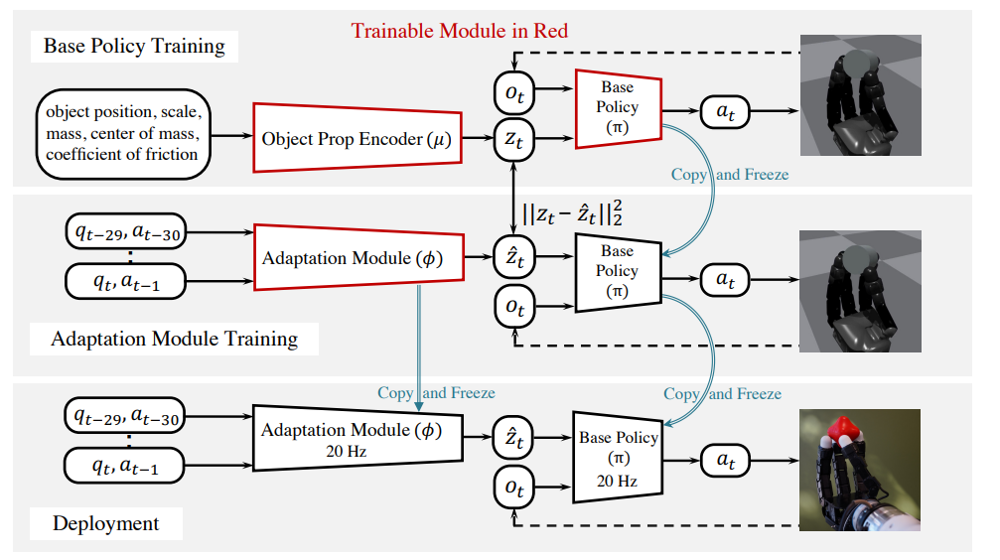

Isaac Lab · Sim-to-Real
Apex Hand
灵巧手圆柱体 手内旋转控制
在 Isaac Lab 中适配 Apex 灵巧手，训练圆柱旋转策略，并完成实机迁移。通过 PPO、动力学域随机化与本体感知历史自适应，使灵巧手在持续抓握中完成圆柱旋转。
训练与自适应


基础策略训练
在仿真中使用 PPO 训练旋转策略，结合物体物理属性等特权信息学习隐变量表示；对动力学参数进行随机化，增强策略对物理差异的适应能力。
本体感知历史自适应
固定基础策略，训练自适应模块从关节状态与控制目标的历史估计隐变量。部署时利用这段历史持续更新策略输入，不再依赖仿真中的物体特权信息。
仿真与实机
完成 Apex 耦合关节与控制接口适配、策略训练，以及部署阶段的观测归一化、关节顺序与动作映射，将仿真策略迁移到实机，实现圆柱的连续手内旋转。